Un análisis termina cuando se puede comunicar. Este capítulo reúne las herramientas para hacerlo: el editor que ajusta cada figura al estilo de una revista, la exportación en los formatos y resoluciones que piden las editoriales, y el Bloque 8, que junta en un informe autocontenido todas las tablas, comprobaciones y figuras, redacta un borrador de resultados y un párrafo de métodos con tus valores y empaqueta datos, tablas y figuras en un solo archivo.
Las secciones 9.1 y 9.2 describen herramientas que están en todos los bloques: cada figura de la app tiene su panel Edit figure y su barra de descarga. Las secciones 9.3 y 9.4 describen el Bloque 8, que tiene dos tarjetas: 1 · What goes into the report, donde eliges qué incluir y cómo exportarlo, y 2 · Preview, donde ves el informe tal como se guardará. El Bloque 8 se habilita en cuanto el Bloque 7 describe los grupos, o antes si los datos son una matriz de distancias.
| Producto | Dónde | Para qué sirve |
|---|---|---|
| Figura editada (PNG, TIFF, SVG, JPG, WEBP) | Cualquier bloque | Una figura suelta para un artículo, una tesis o una presentación. |
| Tabla en CSV | Bloques 2 a 7 | Pertenencias, perfiles o resultados para otra hoja de cálculo o programa. |
| Informe HTML | Bloque 8 | Un documento que se abre en cualquier navegador y guarda todo el análisis. |
| Informe en PDF | Bloque 8 | El mismo informe impreso desde el navegador, para archivar o compartir. |
| Párrafo de métodos | Bloque 8 | Un texto en inglés con los métodos y valores usados, listo para editar. |
| Paquete ZIP | Bloque 8 | Informe, datos, tablas y todas las figuras en vector y en alta resolución. |
Todas las figuras de ClusteringPro se dibujan como gráficos vectoriales y se redibujan al instante con cada cambio. El panel Edit figure — titles, colours, fonts, sizes, debajo de cada figura, tiene dos pestañas: una con lo que se dibuja y otra con cómo se ve.
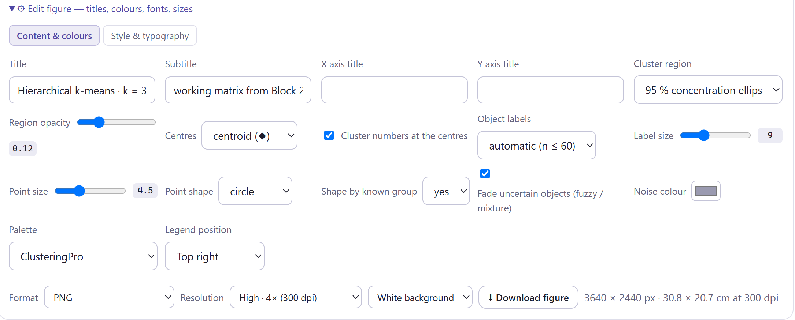
La primera pestaña cambia en cada figura, y los capítulos 3 a 8 describen sus controles en las tablas de figuras de cada bloque. Casi todas tienen al menos un Title y una Palette. Los cuadros de texto aceptan cualquier título: borrar el de un eje lo sustituye por el título automático.
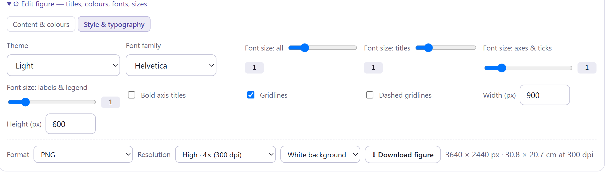
| Control | Qué hace |
|---|---|
| Theme | Light (por omisión), Paper (fondo crema), Dark (fondo oscuro, para presentaciones), Minimal (sin cuadrícula) y Journal (black & white axes), con ejes negros y sin cuadrícula. |
| Font family | Helvetica, Arial, Georgia, Times New Roman, Segoe UI, Calibri, Cambria o monoespaciada. |
| Font size: all | Escala todos los textos a la vez, de 0.6 a 2.6 veces. |
| Font size: titles · axes & ticks · labels & legend | Escalan cada grupo de textos por separado, de 0.6 a 3 veces, sobre la escala general. |
| Bold axis titles | Títulos de los ejes en negritas. |
| Gridlines · Dashed gridlines | Muestra la cuadrícula y la dibuja punteada. |
| Width (px) · Height (px) | Tamaño de la figura, de 400 a 2 400 por 300 a 2 000 píxeles. Cambia la proporción y el espacio para las etiquetas, no la nitidez. |
El tema, la tipografía, los tamaños de letra, las negritas y la cuadrícula son preferencias compartidas: al cambiarlos en una figura se aplican a todas las que se dibujen después, y el navegador los recuerda para la próxima sesión. Así, basta ajustar el estilo de una revista una vez. El ancho, el alto y los controles de la primera pestaña, en cambio, son propios de cada figura y vuelven a sus valores iniciales cuando la figura se recalcula.
| Tipo | Opciones |
|---|---|
| Paletas de grupos (Palette) | ClusteringPro, Vivid, Harvest, Soil & crop, Soft, Deep, Pastel, Greyscale y dos seguras para daltonismo: Okabe–Ito y Paul Tol. |
| Mapas de color (Colour map) | Viridis, Magma, Inferno, Plasma y Cividis (segura para daltonismo); divergentes Red–Yellow–Blue, Red–Blue, Spectral y Blue–White–Red; secuenciales Greens, Yellow–Green, Browns y Heat. |
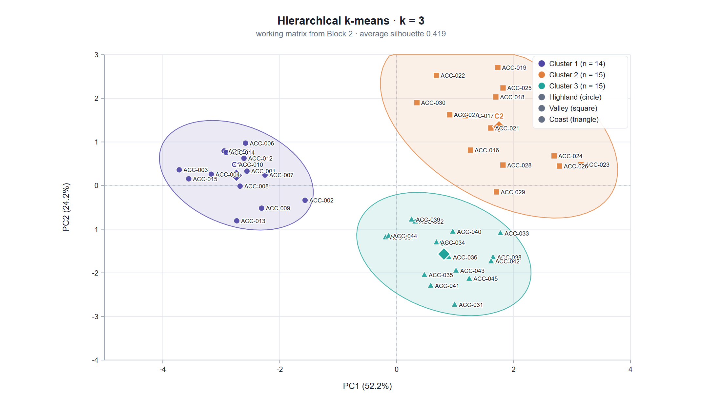
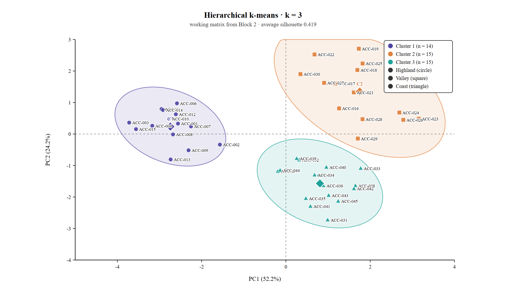
Debajo del editor, cada figura tiene su barra de descarga: formato, resolución, fondo y el botón ⬇ Download figure. A la derecha, la app calcula el tamaño del archivo resultante en píxeles y en centímetros a la resolución elegida.
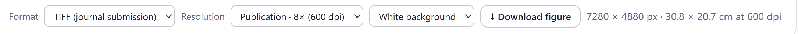
| Formato | Características |
|---|---|
| PNG | Sin pérdida y con la resolución grabada en el archivo, de modo que los programas lo colocan al tamaño correcto. Admite fondo transparente. El formato de uso general. |
| TIFF (journal submission) | RGB sin comprimir con la resolución grabada, el formato que exigen muchas editoriales. Los archivos son grandes. |
| SVG (vector, editable) | Vectorial: se amplía sin perder nitidez y se edita en Inkscape, Illustrator o PowerPoint. La resolución no aplica. |
| JPG · WEBP | Con compresión, para páginas web o presentaciones ligeras. No los uses para artículos. |
| Opción | Factor | dpi | Píxeles | Uso |
|---|---|---|---|---|
| Screen · 2× (150 dpi) | 2 | 150 | 1 820 × 1 220 | Pantalla y presentaciones. |
| High · 4× (300 dpi) | 4 | 300 | 3 640 × 2 440 | Por omisión; tesis e informes. |
| Very high · 6× (450 dpi) | 6 | 450 | 5 460 × 3 660 | Pósteres. |
| Publication · 8× (600 dpi) | 8 | 600 | 7 280 × 4 880 | Figuras de línea para revistas. |
| Maximum · 12× (900 dpi) | 12 | 900 | 10 920 × 7 320 | Cuando la revista pide más de 600 dpi. |
| Si la figura va a… | descarga |
|---|---|
| una revista que pide TIFF | TIFF a 600 dpi, fondo blanco, tema Journal si la revista prefiere ejes en negro. |
| una revista que acepta vectores (PDF, EPS, SVG) | SVG: se convierte a PDF o EPS en Inkscape sin perder calidad. |
| una tesis o un informe en Word | PNG a 300 dpi. |
| una presentación sobre fondo de color | PNG con Transparent (PNG) y, con fondo oscuro, tema Dark. |
| una figura que editarás después (flechas, rótulos) | SVG. |
La resolución elegida se recuerda para las siguientes figuras. El fondo transparente solo tiene efecto en PNG; JPG y TIFF siempre llevan fondo blanco.
Lo que decide la nitidez es el número de píxeles. La app graba los dpi y calcula los centímetros suponiendo que la figura se imprime a su tamaño base, 910 píxeles como 30.8 cm. Al colocarla en una columna de 8.5 cm, la misma imagen de 3 640 píxeles queda a más de 1 000 dpi efectivos. Si la revista pide un ancho de columna, ajusta la proporción con Width y Height antes de exportar y aumenta los tamaños de letra: al reducir la figura, las letras se reducen con ella. Un TIFF sin comprimir ocupa unos 3 bytes por píxel: el de la figura 9.4 pesa unos 100 MB, y a 300 dpi unos 27 MB.
El Bloque 8 no recalcula nada: toma lo que ya está en pantalla. Cada tabla y cada comprobación se copian tal como se ven en su bloque, y cada figura tal como la editaste, como gráfico vectorial. Si cambias algo en otro bloque, basta volver al Bloque 8 y construir el informe de nuevo.
| Casilla | Contenido |
|---|---|
| Data, preprocessing and clustering tendency | Resumen de variables, comprobaciones, tabla de variables, veredicto de preparación, Hopkins y figuras del Bloque 2. |
| Similarity and distance | Casillas, comprobaciones, figuras y comparación de coeficientes del Bloque 3. |
| Hierarchical clustering | Casillas, comprobaciones, grupos del corte, tabla cruzada, figuras y comparación de enlaces del Bloque 4. |
| Partitioning and advanced methods | Casillas, comprobaciones, tabla de grupos, tablas cruzadas, figuras y comparación de métodos del Bloque 5. |
| Number of clusters and validation | Voto, estabilidad, AU/BP, validación externa, clValid y figuras del Bloque 6. |
| Profiles, discriminant analysis and rules | Fichas de los grupos, perfiles, especies indicadoras, discriminante, reglas, asignaciones y figuras del Bloque 7. |
| Executive summary | Casillas con las cifras clave y un borrador de la sección de resultados. |
| Auto-drafted methods paragraph | El párrafo de métodos (sección 9.4). |
| How to cite the software | La cita con su DOI y la entrada BibTeX. |
| Appendix: cluster membership | Una fila por objeto con su grupo conocido, su grupo en el árbol y en la partición y su silueta. |
| Appendix: data as loaded | La tabla original completa; desmarcada por omisión. |
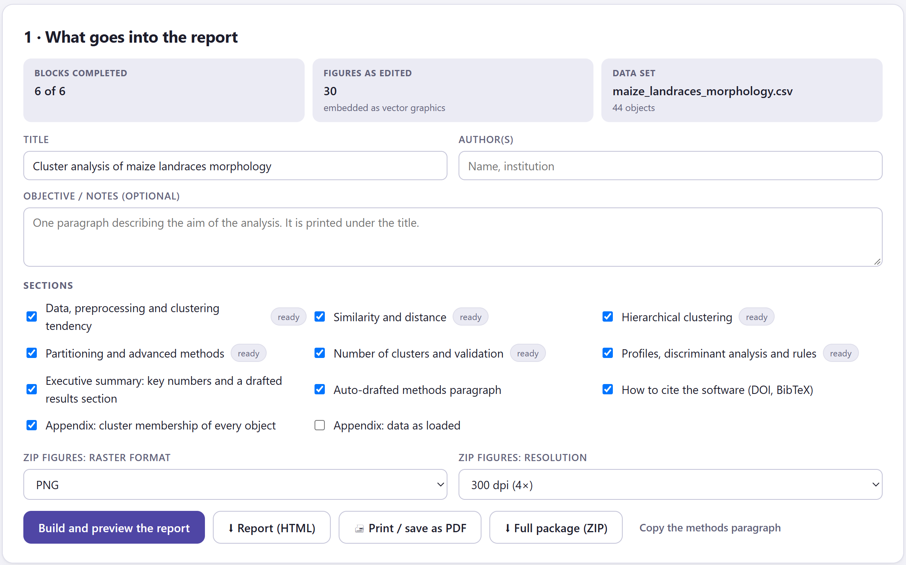
1 2 3 4 5 6Las seis secciones de bloque llevan una etiqueta: ready si el bloque ya se corrió y not run yet si no, en cuyo caso la casilla se desactiva. Una sección solo se incluye si tiene algo que mostrar; las tarjetas que no corriste dentro de un bloque, como el bootstrap multiescala, simplemente no aparecen.
| Botón | Qué hace |
|---|---|
| Build and preview the report | Construye el informe y lo muestra en la tarjeta 2; a la derecha indica su tamaño y cuántas figuras y tablas tiene. |
| ⬇ Report (HTML) | Descarga el informe como un solo archivo HTML, con los estilos y las figuras dentro. Se abre en cualquier navegador sin conexión. |
| 🖨 Print / save as PDF | Abre el informe en una ventana nueva y lanza la impresión; elige Guardar como PDF en el diálogo del navegador. Si el navegador bloquea ventanas emergentes, un aviso pide permitirlas. |
| ⬇ Full package (ZIP) | Construye y descarga el paquete (sección 9.4); mientras trabaja, el botón dice Packing…. |
| Copy the methods paragraph | Copia el párrafo de métodos al portapapeles y lo muestra en un cuadro de texto debajo. |
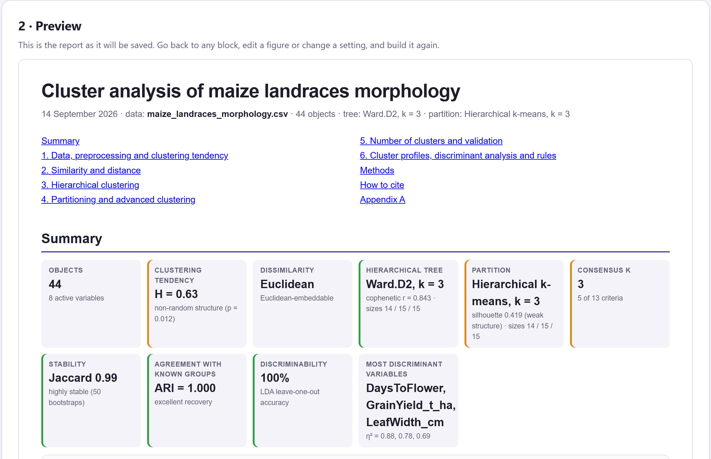
| Casilla | Verde | Ámbar | Qué dice debajo |
|---|---|---|---|
| Clustering tendency | Hopkins > 0.75 | > 0.5 | Estructura no aleatoria si p < 0.05. |
| Hierarchical tree | cofenética > 0.75 | > 0.6 | Correlación y tamaños. |
| Partition | silueta > 0.5 | > 0.25 | Silueta con su calificativo y tamaños. |
| Consensus k | la mitad de los votos o más | menos | Votos del ganador. |
| Stability | Jaccard medio > 0.75 | > 0.6 | highly stable, stable, only partly stable o unstable. |
| Agreement with known groups | ARI > 0.8 | > 0.5 | Solo si hay agrupación conocida. |
| Discriminability | dejando uno fuera > 90 % | > 70 % | Exactitud del discriminante. |
| Most discriminant variables | sin color | Las tres de mayor η². | |
Por debajo del umbral ámbar, la casilla va en rojo. Las casillas de objetos y disimilitud no llevan color.
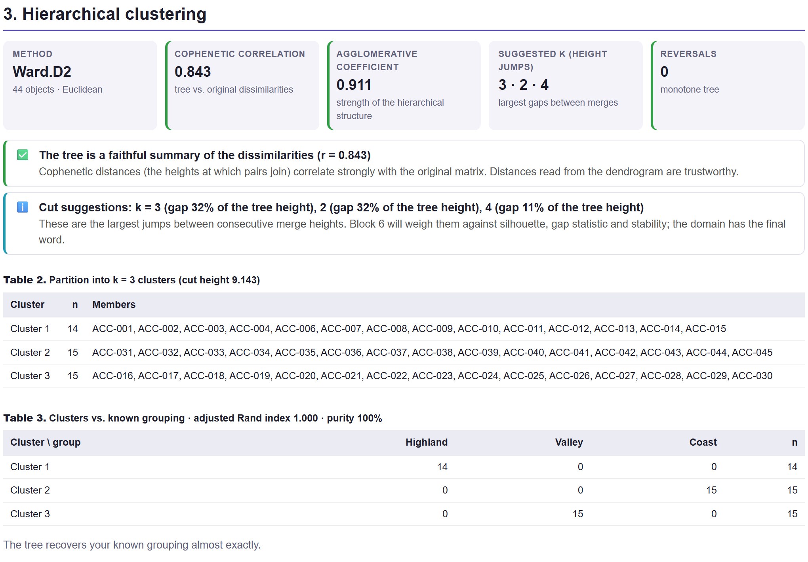
El borrador tiene un párrafo por bloque corrido, y cada frase elige sus palabras con los mismos umbrales que las comprobaciones de la app: el Hopkins se describe como estructura genuina por encima de 0.75, estructura presente pero poco marcada por encima de 0.5 y reparto casi uniforme por debajo; el árbol es fiel con cofenética mayor que 0.8, aceptable por encima de 0.7 y distorsionado por debajo; la silueta indica estructura fuerte, razonable, débil o sin estructura sustancial con los cortes 0.7, 0.5 y 0.25. El párrafo de validación añade que el k de consenso está en el extremo del rango o que el gap no encontró estructura cuando ocurre, y señala los grupos con Jaccard menor que 0.6. El de perfiles recuerda que los valores P de las variables activas son descriptivos, y avisa si el discriminante se sobreajusta. Está en inglés y cada cifra sale del análisis: edítalo, pero no cambies los números.
El apéndice de pertenencias pone lado a lado el grupo del árbol y el de la partición. Sus números son etiquetas independientes: con el maíz, los valles son el grupo 3 del árbol y el grupo 2 de k-means jerárquico, aunque los dos agrupan exactamente las mismas accesiones (ARI = 1.000). Compara los grupos por sus miembros, no por su número.
La sección de métodos de un artículo de agrupamiento es larga y fácil de dejar incompleta. El Bloque 8 la redacta a partir de lo que realmente corriste, con los valores de cada ajuste, y termina con la cita del programa.
| Bloque | Contenido |
|---|---|
| Datos (2) | Número de objetos y de variables activas por tipo, variables suplementarias, faltantes (eliminados o imputados), transformación y escalado, estadístico de Hopkins. Con una matriz cargada, solo que se usó tal como se suministró y el Hopkins sobre sus coordenadas. |
| Disimilitud (3) | Coeficiente, sobre qué matriz se calculó y si es euclidiana. |
| Árbol (4) | Enlace (con β si es flexible), correlación cofenética, coeficiente aglomerativo o divisivo, k del corte, ARI con los grupos conocidos y, si se compararon, número de enlaces. |
| Partición (5) | Método, k, espacio, algoritmo y arranques, modelo de la mezcla o ε y minPts de DBSCAN, silueta y ARI con el árbol. |
| Validación (6) | Rango de k, los criterios y los votos del ganador; réplicas y Jaccard de la estabilidad; réplicas y escalas del AU; índices de la validación externa. |
| Perfiles (7) | Pruebas usadas, χ² de las categóricas, IndVal, y la lambda de Wilks y la exactitud dejando uno fuera del discriminante, con el árbol. |
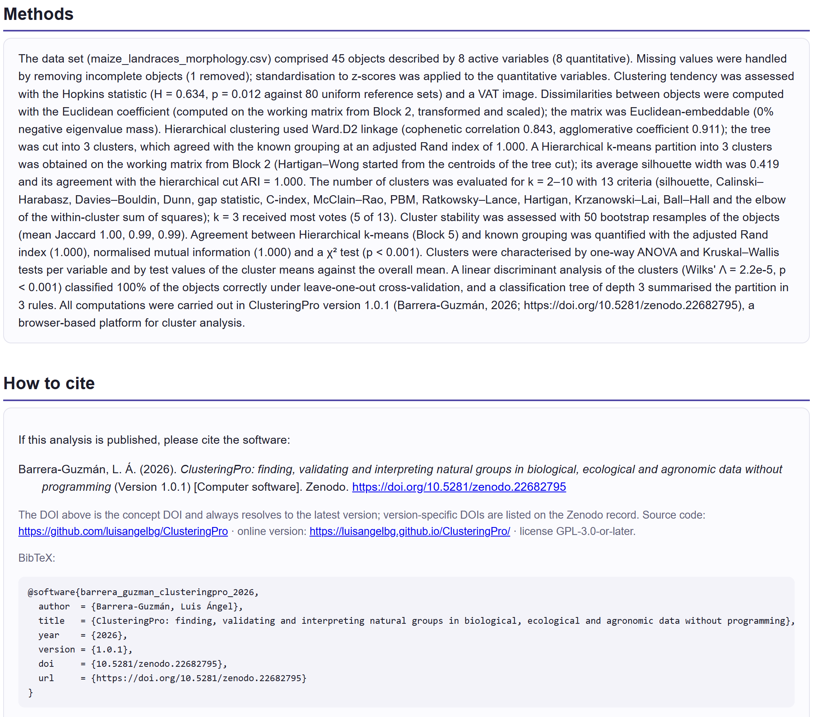
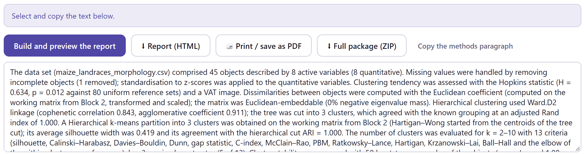
| Archivo o carpeta | Contenido |
|---|---|
| report.html | El informe, idéntico al de ⬇ Report (HTML). |
| data/data_as_loaded.csv | La tabla tal como se cargó. |
| data/preprocessed_matrix.csv | La matriz de trabajo del Bloque 2 (con una matriz cargada, sus coordenadas MDS), con el grupo conocido. |
| data/dissimilarity_…csv | La matriz de disimilitud completa, con el identificador del coeficiente en el nombre. |
| tables/cluster_membership.csv | Grupo conocido, grupo del árbol, grupo de la partición y silueta de cada objeto. |
| tables/tree_merges.csv | Las fusiones del árbol: paso, las dos ramas y la altura. |
| tables/indices_by_k.csv | Los índices del Bloque 6 para cada k. |
| tables/cluster_profiles.csv · indicator_values.csv | Los perfiles del Bloque 7 y, si se calcularon, los valores indicadores. |
| figures/svg/ · figures/png/ (o tiff, jpg, webp) | Cada figura mostrada, en vector y en el formato y la resolución de la tarjeta 1. |
| methods.txt · README.txt | El párrafo de métodos en texto plano y una guía del contenido. |
Las prácticas usan los ejemplos preparados como en los capítulos anteriores, con los Bloques 2 a 7 corridos. La tabla 9.11 resume el informe de cada uno con las opciones por omisión.
| Ejemplo | Secciones | Figuras | Casillas en rojo o ámbar | Lo que el borrador advierte |
|---|---|---|---|---|
| Razas de maíz | 6 | 30 | Hopkins, silueta, consenso | Estructura presente pero poco marcada; silueta débil. |
| Presencia de especies | 6 | 30 | Hopkins, silueta, consenso, discriminabilidad | El discriminante se sobreajusta (53 % frente a 100 %). |
| Matriz de distancias | 5 | 21 | Hopkins | Matriz no euclidiana; el gap no encontró estructura. |
| Cuatro grupos simulados | 6 | 30 | ninguna | Estructura fuerte en todos los párrafos. |
| Ruido uniforme | 6 | 30 | Hopkins, árbol, partición, consenso, estabilidad | Reparto casi uniforme, árbol distorsionado, consenso en el borde, gap en k = 1, estabilidad parcial. |
El informe es el cuaderno de laboratorio del análisis: guarda cada decisión, cada comprobación y cada figura como las dejaste, con la fecha y los datos. Aunque no lo publiques, archívalo con los datos originales: dentro de un año te dirá exactamente qué coeficiente, qué enlace y qué k usaste.
El estilo compartido ahorra repetir ajustes: una vez fijado el aspecto de la revista, todas las figuras que se dibujen después lo heredan, así que conviene fijarlo antes de correr los bloques o recalcularlos al final. Lo propio de cada figura, como los títulos o la paleta, se ajusta en cada una. Elige una paleta segura para daltonismo cuando los grupos se distinguen solo por color, y sube el tamaño de letra si la figura se reducirá a una columna.
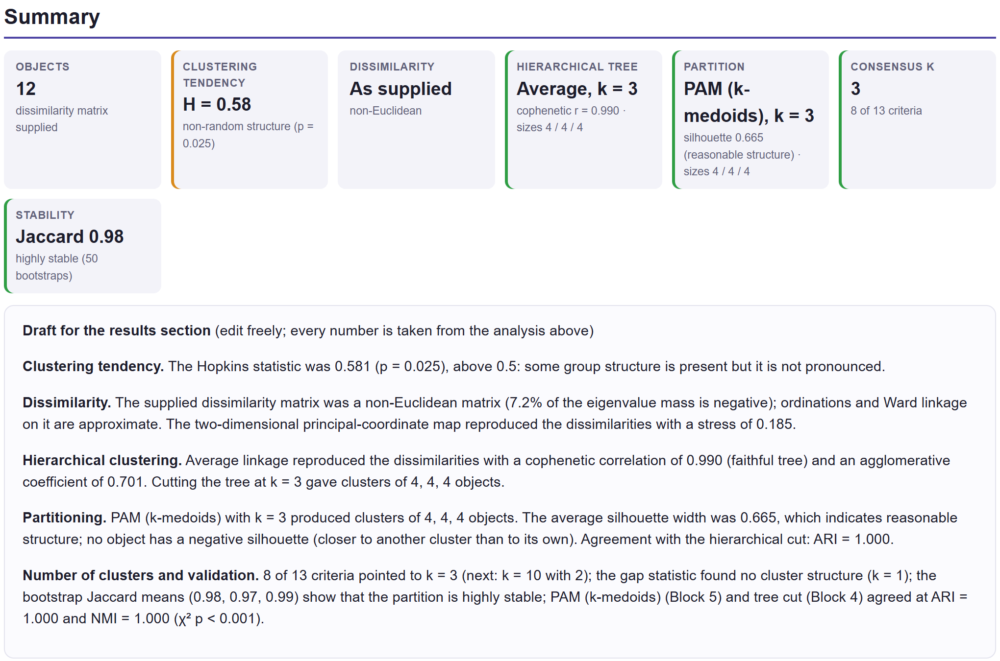
El informe se adapta a lo que hay: con una matriz de distancias describe lo que se hizo con ella y omite lo que no aplica. Revisa siempre que el título corresponda al conjunto de datos y que ninguna casilla hable de un análisis que no corriste.
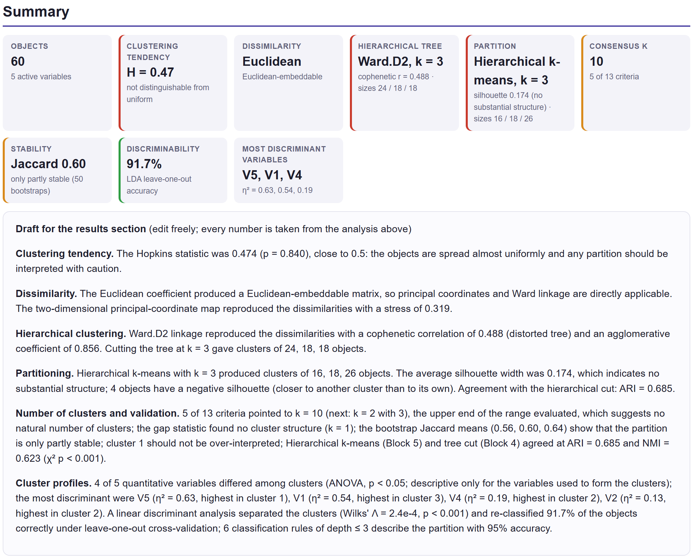
Un buen informe no solo presenta resultados: dice cuánto creerles. Las casillas verdes del discriminante y los valores P de los perfiles no contradicen las rojas: miden qué tan bien se reproducen los grupos que el algoritmo trazó, no si existen. Cuando el resumen se llena de ámbar y rojo, la conclusión honesta es que los datos forman un continuo.
El borrador refleja fielmente el estado de la app en el momento de construirlo. Si mejoras un análisis, reconstruye el informe; si copias el borrador a un artículo, revisa que sus advertencias sigan siendo ciertas y no borres las que lo sean.
Lee el borrador de resultados y el párrafo de métodos de principio a fin: son una base, no un texto final. Comprueba que el título, los autores y el conjunto de datos son los correctos; que las secciones incluidas corresponden a lo que vas a reportar; que las advertencias del borrador aparecen en tu discusión; y que las figuras usan el estilo, el formato y la resolución que pide la revista. Cita el programa con su DOI y guarda el paquete ZIP junto con tus datos: permite a cualquiera reproducir el análisis.
Con este capítulo termina el recorrido por los ocho bloques. Los apéndices reúnen el material de consulta: los formatos de archivo que acepta la app, un resumen de todas las reglas de decisión, un glosario, la solución de los problemas más frecuentes, las referencias de los métodos y los componentes de terceros.